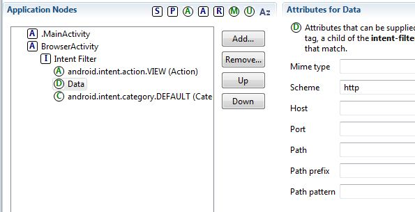
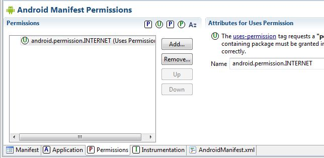
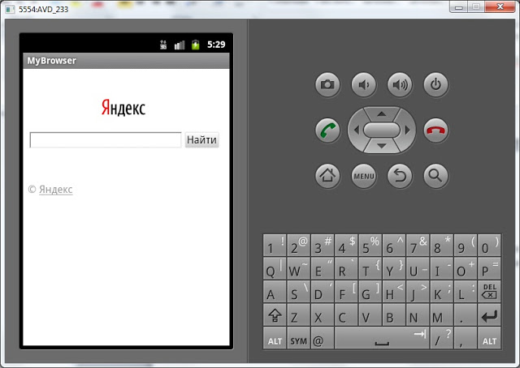

В этом уроке:
- пишем простой браузер
На прошлом уроке мы увидели, что если вызвать Intent с action = ACTION_VIEW и data = Uri-объект с http-адресом, то запускается браузер и отображает содержимое страницы по этому http-адресу. Мы можем самостоятельно сделать простейший браузер, который будет реагировать на такой Intent и просто отобразит страницу. Для этого надо настроить Intent Filter и использовать компонент WebView.
На первом экране приложения у нас будет кнопка, отправляющая Intent. На втором экране будет WebView.
Создадим проект:
Project name: P0321_SimpleBrowser
Build Target: Android 4.0
Application name: SimpleBrowser
Package name: ru.startandroid.develop.p0321simplebrowser
Create Activity: MainActivity
Рисуем main.xml
<?xml version="1.0" encoding="utf-8"?>
<LinearLayout
xmlns:android="http://schemas.android.com/apk/res/android"
android:layout_width="fill_parent"
android:layout_height="fill_parent"
android:orientation="vertical">
<Button
android:id="@+id/btnWeb"
android:layout_width="wrap_content"
android:layout_height="wrap_content"
android:text="web">
</Button>
</LinearLayout>На экране просто кнопка
Кодим MainActivity.java:
package ru.startandroid.develop.p0321simplebrowser;
import android.app.Activity;
import android.content.Intent;
import android.net.Uri;
import android.os.Bundle;
import android.view.View;
import android.view.View.OnClickListener;
public class MainActivity extends Activity {
/** Called when the activity is first created. */
@Override
public void onCreate(Bundle savedInstanceState) {
super.onCreate(savedInstanceState);
setContentView(R.layout.main);
(findViewById(R.id.btnWeb)).setOnClickListener(new OnClickListener() {
@Override
public void onClick(View v) {
startActivity(new Intent(Intent.ACTION_VIEW, Uri.parse("http://www.ya.ru")));
}
});
}
}Код немного непривычен. Обратите внимание я нигде не описываю объект класса Button. Метод findViewById возвращает View, и это View поддерживает метод setOnClickListener, который я вызываю. А в методе setOnClickListener я создаю объект, реализующий интерфейс OnClickListener и в нем пишу код в onClick. Также я создаю объект Intent не отдельно, а прямо в методе startActivity. Кода меньше получилось, чем обычно. Может быть вам подойдет такой вариант.
Итак, мы по нажатию на кнопку запускаем Intent, который означает, что мы хотим просмотреть сайт http://www.ya.ru.
Создадим второе Activity. Сначала layout-файл browser.xml:
<?xml version="1.0" encoding="utf-8"?>
<LinearLayout
xmlns:android="http://schemas.android.com/apk/res/android"
android:layout_width="match_parent"
android:layout_height="match_parent"
android:orientation="vertical">
<WebView
android:id="@+id/webView"
android:layout_width="match_parent"
android:layout_height="match_parent">
</WebView>
</LinearLayout>На экране компонент WebView.
Создаем BrowserActivity.java:
package ru.startandroid.develop.p0321simplebrowser;
import android.app.Activity;
import android.net.Uri;
import android.os.Bundle;
import android.webkit.WebView;
public class BrowserActivity extends Activity {
@Override
protected void onCreate(Bundle savedInstanceState) {
super.onCreate(savedInstanceState);
setContentView(R.layout.browser);
WebView webView = (WebView) findViewById(R.id.webView);
Uri data = getIntent().getData();
webView.loadUrl(data.toString());
}
}Определяем WebView, читаем data из Intent и передаем строку в WebView.
Теперь пропишем Activity в манифесте. К нему нам надо будет добавить Intent Filter, в нем указать action = ACTION_VIEW. А для data мы видим несколько параметров, используем Scheme = http.

Это значит, что Uri объект в Intent должен содержать http-адрес.
Не забываем про Category = Default. Label для BrowserActivity укажите, например, MyBrowser.
Также в манифесте надо добавить Uses Permission = android.permission.INTERNET на вкладке Permissions. Чтобы система дала приложению доступ в интернет.

Все сохраним и запустим приложение. Жмем кнопку и видим выбор: система предлагает нам на выбор системный браузер и наш, только что сделанный. Т.е. Intent c запросом на просмотр http-адреса нашел в системе два Activity, которые в своих Intent Filter заявили, что умеют отображать http-адреса.

Выбираем наше MyBrowser и видим страницу.

Мы увидели, что Activity в наших приложениях могут обрабатывать не только наши придуманные action, но и системные. И, тем самым, создавать альтернативу системным приложениям.
Но, как вы понимаете, мы запросто могли в нашем Activity не использовать WebView и не показывать страницу. Можно было использовать TextView и в нем просто отобразить в виде текста адрес из data. Или написать http-запрос, который скачал бы эту страницу и отобразил ее html-содержимое. Мы могли вообще забить на http-адрес и показать какую-нибудь картинку левую или просто темный экран.
Т.е. для Activity можно создать Intent Filter, который будет сообщать системе, что приложение умеет что-то, но, при этом, внутри Activity будет какая-нибудь ерунда. Это уже вопросы программерской этики, здравого смысла и адекватности )
Полный код манифест-файла:
<?xml version="1.0" encoding="utf-8"?>
<manifest xmlns:android="http://schemas.android.com/apk/res/android" package="ru.startandroid.develop.p0321simplebrowser" android:versionCode="1" android:versionName="1.0">
<uses-sdk android:minSdkVersion="10"></uses-sdk>
<uses-permission android:name="android.permission.INTERNET"></uses-permission>
<application android:icon="@drawable/ic_launcher" android:label="@string/app_name">
<activity android:label="@string/app_name" android:name=".MainActivity">
<intent-filter>
<action android:name="android.intent.action.MAIN"></action>
<category android:name="android.intent.category.LAUNCHER"></category>
</intent-filter>
</activity>
<activity android:label="MyBrowser" android:name="BrowserActivity">
<intent-filter>
<action android:name="android.intent.action.VIEW"></action>
<data android:scheme="http"></data>
<category android:name="android.intent.category.DEFAULT"></category>
</intent-filter>
</activity>
</application>
</manifest>